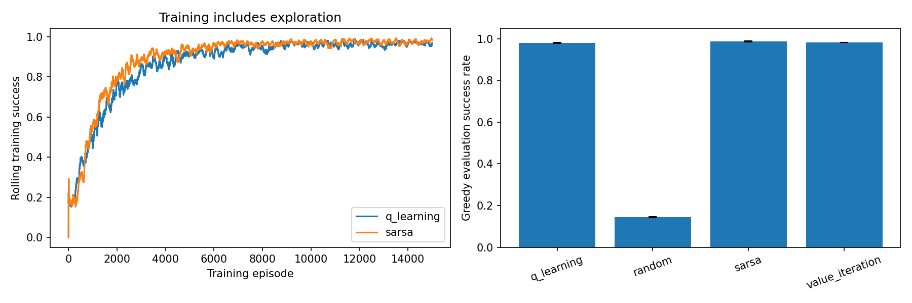
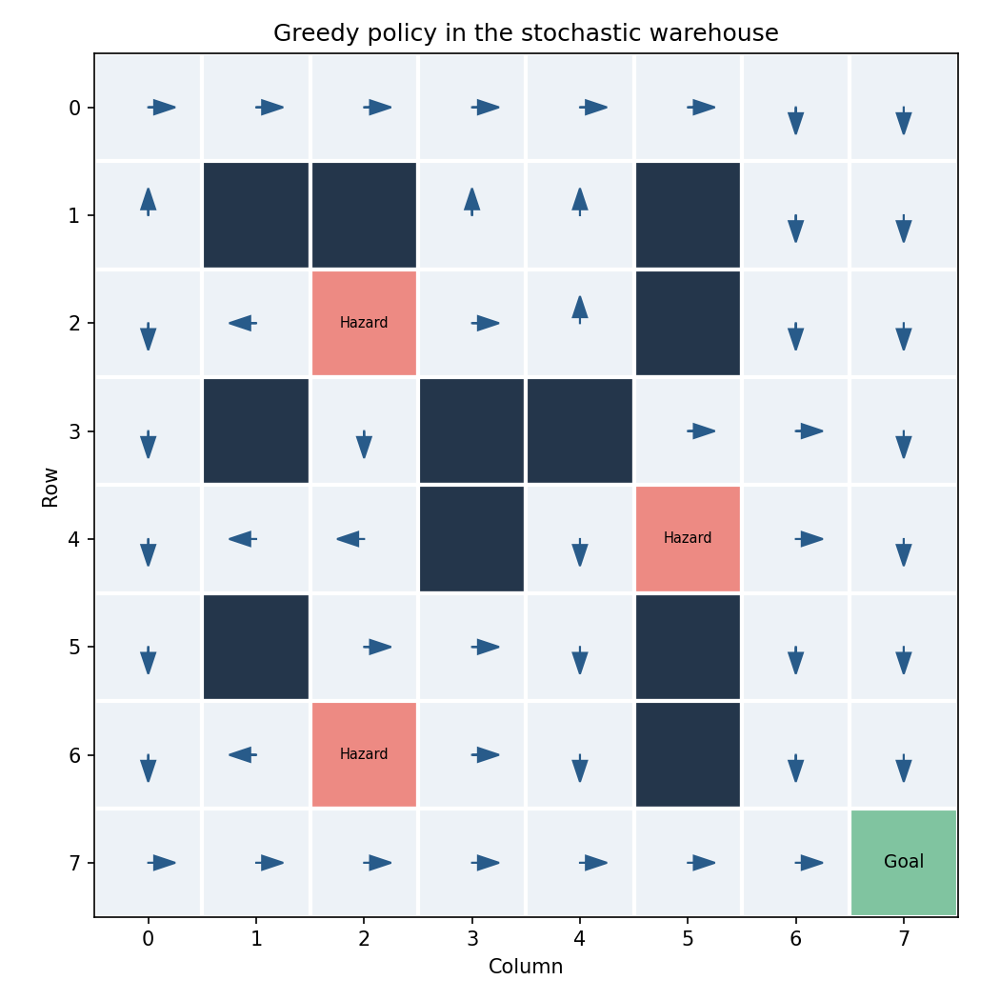

Policies are evaluated greedily with separate movement and starting-state random generators. Value iteration knows the complete MDP; Q-learning and SARSA learn from transitions. Standard deviations combine training-seed variation and evaluation episode randomness.
| model | success_rate_mean | success_rate_std | hazard_rate_mean | hazard_rate_std | timeout_rate_mean | timeout_rate_std | mean_steps_mean | mean_steps_std | mean_return_mean | mean_return_std | mean_discounted_return_mean | mean_discounted_return_std | mean_collisions_mean | mean_collisions_std |
|---|---|---|---|---|---|---|---|---|---|---|---|---|---|---|
| q_learning | 0.9793 | 0.0021 | 0.0207 | 0.0021 | 0.0000 | 0.0000 | 8.8597 | 0.1678 | 8.6876 | 0.0312 | 5.8529 | 0.0225 | 0.5657 | 0.0118 |
| random | 0.1450 | 0.0026 | 0.8103 | 0.0031 | 0.0447 | 0.0015 | 29.7957 | 0.8001 | -11.5038 | 0.1638 | -4.8256 | 0.0183 | 9.8323 | 0.1844 |
| sarsa | 0.9873 | 0.0015 | 0.0127 | 0.0015 | 0.0000 | 0.0000 | 9.6180 | 0.7467 | 8.7646 | 0.1121 | 5.7512 | 0.2352 | 0.6013 | 0.0854 |
| value_iteration | 0.9820 | 0.0010 | 0.0180 | 0.0010 | 0.0000 | 0.0000 | 8.4810 | 0.0723 | 8.7881 | 0.0147 | 5.9997 | 0.0278 | 0.5190 | 0.0050 |
| model | training_seed | evaluation_seed | success_rate | hazard_rate | timeout_rate | mean_steps | mean_return | mean_discounted_return | mean_collisions |
|---|---|---|---|---|---|---|---|---|---|
| random | 42 | 101554 | 0.1430 | 0.8110 | 0.0460 | 30.6330 | -11.6421 | -4.8438 | 9.9710 |
| value_iteration | 42 | 101554 | 0.9810 | 0.0190 | 0.0000 | 8.4000 | 8.7772 | 6.0187 | 0.5140 |
| q_learning | 42 | 101554 | 0.9770 | 0.0230 | 0.0000 | 8.6770 | 8.6579 | 5.8769 | 0.5720 |
| sarsa | 42 | 101554 | 0.9860 | 0.0140 | 0.0000 | 9.5270 | 8.7489 | 5.7401 | 0.5920 |
| random | 43 | 101591 | 0.1440 | 0.8130 | 0.0430 | 29.7150 | -11.5464 | -4.8073 | 9.9030 |
| value_iteration | 43 | 101591 | 0.9820 | 0.0180 | 0.0000 | 8.5390 | 8.7823 | 5.9678 | 0.5190 |
| q_learning | 43 | 101591 | 0.9810 | 0.0190 | 0.0000 | 8.8950 | 8.7201 | 5.8497 | 0.5520 |
| sarsa | 43 | 101591 | 0.9890 | 0.0110 | 0.0000 | 8.9210 | 8.8837 | 5.9917 | 0.5210 |
| random | 44 | 101628 | 0.1480 | 0.8070 | 0.0450 | 29.0390 | -11.3230 | -4.8258 | 9.6230 |
| value_iteration | 44 | 101628 | 0.9830 | 0.0170 | 0.0000 | 8.5040 | 8.8048 | 6.0125 | 0.5240 |
| q_learning | 44 | 101628 | 0.9800 | 0.0200 | 0.0000 | 9.0070 | 8.6847 | 5.8322 | 0.5730 |
| sarsa | 44 | 101628 | 0.9870 | 0.0130 | 0.0000 | 10.4060 | 8.6612 | 5.5217 | 0.6910 |

